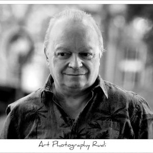

DIRK DE SCHOENMAKER (° Lokeren 16-02-62)

Na muziekstudies saxofoon, klarinet, piano en dwarsfluit aan de Muziekacademie te Lokeren, behaalde hij een 1e prijs Notenleer, Saxofoon en Kamermuziek aan het Conservatorium te Gent (leerling van oa Willy Demey en François Glorieux).
Daarna volgde hij nog les aan de Antwerpse Jazzstudio bij oa Ben Sluys en volgde verschillende jazzworkshops.
Deed een Europese tour met Soullegende Rufus Thomas (USA), speelde ongeveer 10 jaar bij de VTM – Soapband en met Nightshift begeleidde hij tal van internationale artiesten o.a. The Tramps, The Platters , Peter Koelewijn etc… Cd opnames met o.a. Rufus Thomas, Philippe Robrecht, Marijn De Valck, Buadee, VTM Soapband, Leen Persijn e.a.
Momenteel muzikaal actief bij onder andere “Sax for Sale” (jazztrio), “Sax Obsession” (saxofoonkwintet), “The All-Time Jazzband” en “To be or not to be(bop)” (Educatief programma rond 100 jaar Jazz), Buadee , Luc Caals, in het orkest van “Het Witte Paard in Blankenberge” (2011 met The Gibson Brothers) en andere…
Speelde ook mee als saxofonist bij de musicals GREASE & ANNIE (Musical van Vlaanderen).
In 2012 extra saxofonist bij de in Nederland populaire groep Racoon (o.a. op Pinkpop 2012).
Free-lance speelt hij bij verschillende jazz- en popgroepen, vooral als vervanger en is ook actief als studiomuzikant.
Hij is fulltime leraar saxofoon, samenspel en instrumentaal ensemble aan de muziekacademie “De Kunstbrug” te Gentbrugge en aan de “Academie voor Podiumkunsten” te Gent.
“Nondesax” is een saxensemble dat onstaan is in de les instrumentaal ensemble en dat nu regelmatig optreedt.